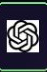
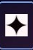
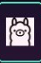
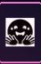
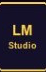

Any model
Talk to local Ollama (bundled on macOS; wizard on Windows/Linux) or cloud APIs — Claude, OpenAI-compatible, Gemini, and more. Hybrid routing: iterate cheap locally, send hard reviews to the cloud.
Open source · Any model · Local or cloud · v1.2.0-beta.23
Neural Junkie is an open-source desktop app where you chat with any model you choose — bundled Ollama on your machine, or cloud backends like Claude, OpenAI-compatible APIs, and more. Then run them as a team of specialist agents — backend, security, biology, AWS, or experts you create — with human approval and optional IDE v4 when you need an editor.

GPT
Gemini
Ollama
HF
LM StudioNot locked to one vendor chat — run any model where you choose, then specialize, collaborate, and stay in control.
Talk to local Ollama (bundled on macOS; wizard on Windows/Linux) or cloud APIs — Claude, OpenAI-compatible, Gemini, and more. Hybrid routing: iterate cheap locally, send hard reviews to the cloud.
Backend, security, biology, CAD, AWS — or /create-expert for any domain. @mention the right role instead of one model pretending to be everything.
Approve file changes with diff preview. Bounded /collaborate sessions. Tool gates. Personal learning only when you confirm.
Same hive-mind workspace — different packs and experts for your job.
Engineering specialists, repo agents, Git in the app, IDE v4 with full LSP and remote SSH. Ship with approval gates, not silent edits.
IDE v4 guide →BiologyExpert, OpenBioLLM, sequence tools, and protein folding — local when you want it. Customer packs add instrument-specific QC without a public store listing.
Lab workflows →AWSExpert with read-only CLI MCP, IncidentManager for Jira triage, and handoff to engineering specialists when code changes are needed.
Domain packs →Guitar coach, compliance reviewer, internal API expert — custom experts are first-class. Slack Connect keeps teams in sync when you need it.
Experts guide →Short demos from the real desktop — product overview, multi-agent chat, Assistant workflows, Slack, local image gen, and away mode.
Feature fly-through — specialists, collaboration, IDE, packs, and local AI in one desktop app.
Gemini, Copilot, and Cursor agents in the same room — the multi-agent pattern you use for real work.
Your always-on Assistant — reminders, tasks, workspace context, and command help in one DM.
Mirror bound channels, route @mentions to any agent, and keep your team in Slack while agents run locally.
Generate images with local Ollama models — no cloud API required for creative workflows.
Slack away mode and personal inbox — your agents keep answering while you're offline.
Flagship capabilities ·
Multi-agent collaboration
/collaborate turns a goal into a bounded session: shared plan, review rounds, human approval, then execution with per-agent tasks and explicit workspace confirmation before agents touch your files. Great for research write-ups, cross-functional plans, and multi-step projects — not just code.
Install-and-go local AI
macOS installers bundle the Ollama runtime; Linux and Windows use slim builds and the setup wizard Install Ollama on first launch. Complete the wizard, pull a default model once, and your agents run on your hardware — private by default, cloud optional. After first run, browse more models in the built-in Model library.
ollama serve with models in app data.install.sh).Slack integration
Slack Connect mirrors bound channels into Neural Junkie with two-way threading: @mentions and channel lines route to the agent you choose — Assistant, custom experts, repo agents, or any configured Claude / GPT / Gemini / Ollama backend. Personal inbox: DM the NJ bot from Slack mobile; replies land in a private hub channel. Setup diagnostics in Settings help you verify OAuth, Socket Mode, and channel routing.
nj: prefix, or reaction emoji rules.#cursor-test, not opaque IDs.Domain packs
Open Domain packs from the toolbar chip (⌘⇧K) → Store to install official packs from GitHub. The hub merges an embedded catalog snapshot so new packs appear without a restart. Enable multiple packs; pick which enabled pack controls IDE vs team layout. Chat, Slack, and custom experts stay available either way.
Engineering specialists, Git in the app, IDE v4 (full LSP, remote SSH, @codebase), implementation sessions.
BiologyExpert, OpenBioLLM, sequence tools, protein folding — plus customer sideload packs for instrument-specific QC.
CADExpert, OpenSCAD workbench, param sliders, Three.js STL preview — parametric design in chat.
LoRA training from chat and collabs, personal learning opt-in, adapter compose in Ollama.
AWSExpert with read-only AWS CLI MCP tools, SSO profile picker, and account-scoped infra queries.
IncidentManager for Jira triage, reproduction steps, and handoff to engineering specialists.
WebBrowserExpert, HTML preview workbench for .html files and local dev servers, plus fetch_url.
MusicExpert, ACE-Step generation, music workbench, stems export, and EP workflow.
Head-to-head model matches on chess, Connect Four, and logic puzzles with verifiable scoring and a live Arena workbench.
Same-room LAN chat — host ephemeral rooms, guests join with a code, and @mention the host’s agents. No cloud hub.
Custom packs: Pack Dev Studio + sideload zip for customer bundles. See pack catalog and PACKS.md.
IDE v4 · Software development pack
IDE v4 is a capability on top of the hive-mind — not the whole product. Full Monaco LSP on local workspaces, remote SSH via nj-remote, dev container attach, and tree-sitter symbols — with Ask / Agent composer and implementation sessions from IDE v3 underneath.
gopls, rust-analyzer, pyright-langserver.@codebase through one backend.Hardware requirements
Neural Junkie ships as a ~15 MB desktop app plus an Ollama runtime (~1–2 GB — bundled on macOS, wizard-installed on Linux/Windows). Your first local pull for software development defaults to qwen2.5-coder:14b (~9 GB) and qwen2.5:7b (~4.5 GB) — roughly 15–20 GB total on disk before you chat. The setup wizard reads your RAM and recommends model tags; Settings shows estimated disk and suggested RAM per model.
| Tier | RAM | Developer primary |
|---|---|---|
| minimal | < 8 GB | qwen2.5-coder:7b / llama3.2:3b |
| light | 8–15 GB | qwen2.5-coder:7b |
| recommended | 16–31 GB | qwen2.5-coder:14b |
| heavy | 32 GB+ | 14B + LoRA bases / larger models |

Long conversations need more than a bigger prompt window. Neural Junkie routes intent, scopes workspace attachment, and lets you save facts you want agents to remember.
Every turn shows routing badges and a live telemetry drawer — model tier, retrieval mode, composer mode. ReAct MCP runs tools on models like Gemma 3 12B without native tool calling.
Auto, Chat, or Code mode on each send. Chat skips heavy tooling for casual turns; Code enables workspace and file workflows. Thread-scoped history keeps side topics focused.
User-confirmed memory with agent, global, and collaboration scopes. Ollama embedding retrieval injects the right notes per turn — nothing saved without your approval.
Per-user markdown rules via Settings/API shape every prompt. In-channel find bar searches message history so you can recover decisions without scrolling forever.
Beyond IDE v4, local AI, hardware planning, Slack, collaboration, and domain packs — the desktop shell, experts, commands, and provider wiring that tie it together.
Tauri + React app with channels, DMs, threads, workspace tabs, a searchable workspace switcher, and a command palette. Toggle files, code, terminal output, pending changes, and My Agents without leaving the thread.
Spin up a custom domain expert for any topic via /create-expert or a DM. Enable domain packs for deeper tooling; add repo, Confluence, and CLI agents when you need more.
Everything from agent lifecycle and provider switches to reindexing, file-change flows, meetings, and collaboration — exposed in the palette with guided forms for complex arguments and slash-form compatibility for automation.
Agents propose edits; you approve or reject with diff preview. Local and remote SSH workspaces share the same hub-backed tree, git, and file-change flows.
Toolbar Model library (⇧⌘M): curated Ollama and Hugging Face grid, install progress, Use for agents — extends bundled Ollama after first run.
Persisted RunbookDefinition library, run history, connector profiles, and pack-owned templates — import markdown or start from the desktop RB button.
MCP export/import for agent knowledge, per-agent providers (Ollama with lifecycle help and an in-app model library, Claude, LM Studio, OpenAI-compatible APIs), optional MCP tool servers, and a Go hub sidecar for single-artifact desktop builds.
The hub ships a browser chat UI; the Tauri desktop is the full workspace (palette, files, editor, threads). Below is the main workspace; more shots and context live in the README.

Same habits as team chat — with agent-native superpowers for individuals and groups.
Opinionated defaults for teams that want speed and guardrails.
nj-remote sidecar.make chat, and automation via the Go CLI.Tagged desktop builds and major hub milestones. Install artifacts and checksums are attached to each GitHub release.
Latest download
v1.2.0-beta.23
Plan mode with canvas artifacts, document canvas, first-win coach, and leaner small-model IDE turns — plus semantic stamp / memory gates from beta.22, one-click Ollama, Neural Canvas + Maps, and everything since beta.6. Release notes.
Download v1.2.0-beta.23 Homebrew install Beta.20 article Release notes CHANGELOG.md
Install from Downloads — macOS: brew install --cask neural-junkie · Linux: brew install neural-junkie (after brew tap camronwood/tap) — or start here for a five-minute walkthrough. Prefer source? Clone the repo and run make start-all.